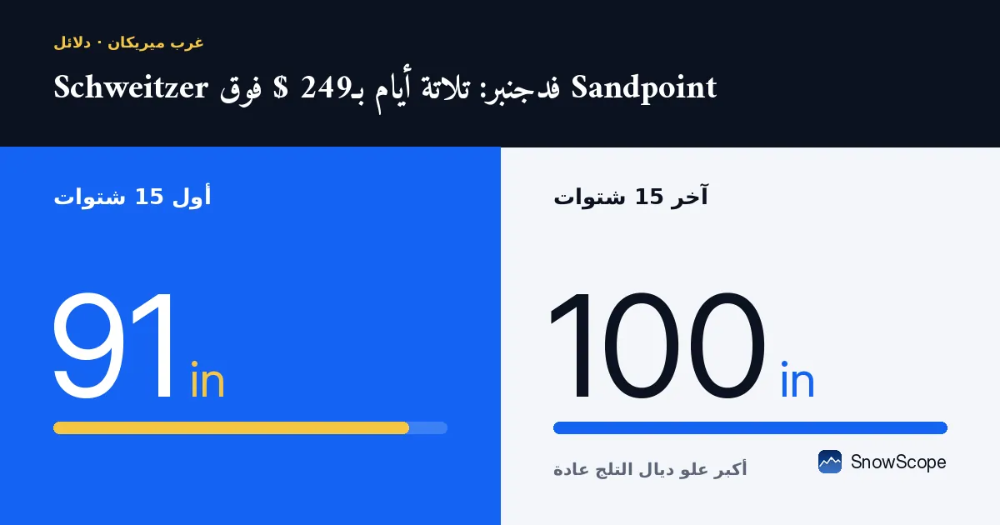

Schweitzer فدجنبر: تلاتة أيام بـ249 $ فوق Sandpoint
Schweitzer Mountain Resort كتقع على جبل طويل فوق Sandpoint، Idaho، كيطلع 2,380 فت (728 م) من سطح البحرية لحد الفم ديال الجبل. لـ رحلة فـ ديسمبر، 3-Pack ب 249 دولار لتلاتة أيام ديال التزلج كتخليك تختار أحسن أوقات التلج بحال ما تضطر تخلص الفلوس الكتيرة.
شوف توقعات التلج مباشرة ديال Schweitzer Mountain Resort فالتطبيق ديال SnowScopeالعلو ديال التلج، التنبيهات والخريطة 3D، فابور.
الارتفاع هو كلشي فـ ديسمبر
البيستات ديال Schweitzer كتبدا من 4,010 فت (1,221 م) فـ القاع لحد 6,390 فت (1,949 م) فـ الفم ديال الجبل، و 10 مصاعد كتخدم حوالي 46 ميل (74 كم) ديال البيستات. هاد الارتفاع الكبير كيهم بزاف فـ ديسمبر: القاع والفم ديال الجبل كيكونو فـ فصول تلج مختلفة. فـ 15 ديسمبر، القاع فيه تلج قليل بـ 22 إنش (55 سم)، وسط الجبل فـ 5,200 فت (1,585 م) فيه 35 إنش (90 سم)، والفم ديال الجبل فيه 54 إنش (138 سم).
بحال ما يوصل عيد الميلاد الصورة كتتبدل لفوق: وسط الجبل كيوصل لـ 43 إنش (109 سم) والفم ديال الجبل 60 إنش (152 سم). بحال ما يوصل ليلة رأس السنة، وسط الجبل كيكون فـ 49 إنش (124 سم). المتزلجين ديال ديسمبر ديال البدية كيجب عليهم يركبو المصاعد ديال الفم ديال الجبل؛ الزوار ديال آخر الشهر كيقدرو يتزلجو لحت تحت.

واش التلج كيكون موثوق فأنهي وقت
التلج فـ وسط الجبل كيكون موثوق بزاف باش تخطط عليه. فـ 15 ديسمبر، 85 % من الشتوات اللي فاتو كانت فيها 20 إنش (50 سم) أو أكثر—شي غريب بزاف فـ البدية ديال الموسم. هاد النسبة كتطلع لـ 98 % بحال ما يوصل عيد الميلاد وكتبقا 98 % لحد ليلة رأس السنة. الأسبوع ديال البدية ديال ديسمبر فيه تلج ديال جودة (يعني الأسبوع تاع فـ المتوسط 20 إنش أو أكثر) فـ 72 % من الشتوات فقط، بلاكن بحال ما يوصل أسبوع عيد الميلاد هاد النسبة كتطلع لـ 98 %.
القاع أخطير: غير 35 % من ديسمبرات كتبدا ب 20 إنش (50 سم) فـ اليوم الأول، بلاكن 85 % كتوصل لهاد الكمية بحال ما يوصل آخر الشهر. الشتاء اللي فات كان استثناء—القاع كان فيه غير 2 إنش (6 سم) فـ 1 ديسمبر و 11 إنش (28 سم) فـ عيد الميلاد—بلاكن أكثر الشتوات كترجع تحسن بحال ما يوصل آخر الشهر.

الأسعار ديال 3-Pack والاستراتيجية
تلاتة أيام ب 249 دولار يعني 83 دولار فـ اليوم، صحيح طول الموسم ديال 2026-27. هاد الثمن كيخليك تتجنب الأيام ديال الزحام وتحجز غير كاش التوقعات كتقول شنو التلج. ديسمبر فيه نوافذ طبيعية كاين التلج: النص ديال الثاني ديال الشهر أكثر بزاف احتمال باش تعطيك شي حاجة من النص ديال الأول.
بالمقارنة مع البدائل القريبة، Schweitzer كتكلف أكثر فـ اليوم من Lookout Pass (اللي كتبدا من 63 دولار فـ وسط الأسبوع) أو Brundage (اللي كتبدا من 65 دولار فـ أيام معينة)، بلاكن التلج ديال الفم ديال الجبل الأعمق ديال Schweitzer والبيستات الكبار كيبررو الفرق لـ الزائر اللي غادي يقضي النهار الكامل.
واش هاد العقد كتختلف مع اللي فات
السجلات ديال المدة الطويلة كتقول التلج فـ وسط الجبل كينقص شوية شوية مع الوقت. فـ أول 15 شتاء من السجلات (1980-81 لحد 1994-95)، 15 ديسمبر عادي كتجيب 41 إنش (104 سم) و 100 % من الشتوات كانت فوق 20 إنش (50 سم). آخر 15 شتاء (2011-12 لحد 2025-26) كان المتوسط 32 إنش (80 سم) فـ هاد اليوم، و 73 % من الشتوات كانت فوق الحد.
الموسم اللي فات كسر النمط: وسط الجبل كان فيه غير 6 إنش (16 سم) فـ 15 ديسمبر، أفرك بداية فـ شتوات كتيرة. بلاكن ديسمبر كاملا تاع جودة: بحال ما يوصل 25 يوصل لـ 20 إنش (51 سم)، وبحال ما يوصل آخر السنة 36 إنش (91 سم). آخر ديسمبر كيكون موثوق بزاف من البداية.
واش كتجهز وشنو اللي كيجب تعرفه قبل ما تمشي
الضباب والغيوم المنخفضة كتكون شي عام على الجبل، خصوصا فـ البدية ديال النهار، بالتالي جيب نضارات مع عدسة ديال الضوء الضعيف. الطريق اللي تطلع من Sandpoint حادة وضيقة: جيب السلاسل أو استعمل إطيارات ديال الشتاء، واترك وقت باش تطلع بهدوء إذا كانت الطريق رطبة.
تلاتة أيام كيف تقسم الخطر: كتقدر تستنى توقعات صحيحة واتجنب يوم لي شكو ضعيف. إذا مشيت فـ ديسمبر ديال البدية، خطط غير تقضي أكثر الوقت ديالك فوق وسط الجبل؛ إذا مشيت بعد 20، كل الجبل كيفتح.
نصايح للي كيتزلجو
- حجز 3-Pack قبل ما تمشي لرحلتك وتستنى تقرر أنهي تلاتة أيام لحد 7 لـ 10 أيام قبل ما تخرج، واش التوقعات كتكون أوضح.
- دور على 15 ديسمبر أو ما بعده: 72 % لـ 98 % من الشتوات فيها تلج كايف فـ وسط الجبل من هاد التاريخ لحد ليلة رأس السنة.
- ديسمبر ديال البدية (قبل 15): اركب المصاعد ديال الفم ديال الجبل فقط. القاع فيه تلج قليل وممكن يبان الحجر.
- الإطيارات ديال الشتاء أو السلاسل ضرورية على الطريق ديال الصعود. حادة بزاف وممكن تكون جليدية حتى واش الطريق فـ المدينة صافية.
- جيب عدسة ديال الضوء الضعيف لـ نضارات ديالك. الغيوم فـ الفم ديال الجبل كتكون عام و ممكن تعماك فـ وسط النهار فـ التلج.
على هاد الأرقام
العلو ديال التلج فالمحطات هو أكثر تلج فالجهة الفوقانية فالتاريخ المكتوب؛ هادو تقديرات لمنطقة، ماشي قياس فنقطة وحدة. التوقعات يمكن تتبدل. ديما شوف النشرة الرسمية ديال الانهيارات قبل ما تخرج من البيست.
النشرات الرسمية ديال الانهيارات: avalanche.org (US national portal)
كيفاش تستاشهد بهاد المقال
للبحث، التعليم ولا الصحافة: الأرقام والرسومات تقدر تعاود تخدم بيهم بحرية تحت CC BY 4.0 مع هاد الاستشهاد.
SnowScope (2026), Schweitzer فدجنبر: تلاتة أيام بـ249 $ فوق Sandpoint, https://snowscope.app/blog/ar/2026/11/schweitzer-sandpoint-december-3-pack-deal.html, تشاف ف 2026-11-14
SnowScope (Atlas Labs). (2026, November 14). Schweitzer فدجنبر: تلاتة أيام بـ249 $ فوق Sandpoint. SnowScope snow reports. https://snowscope.app/blog/ar/2026/11/schweitzer-sandpoint-december-3-pack-deal.html
BibTeX
@misc{snowscope2026schweitzersandpointdecem,
author = {{SnowScope (Atlas Labs)}},
title = {Schweitzer فدجنبر: تلاتة أيام بـ249 $ فوق Sandpoint},
year = {2026},
month = nov,
howpublished = {\url{https://snowscope.app/blog/ar/2026/11/schweitzer-sandpoint-december-3-pack-deal.html}},
note = {Published 2026-11-14 20:57 UTC; accessed 2026-11-14}
}· CC BY 4.0 · الطريقة، الداتا والأدوات →
Schweitzer Mountain Resort: التلج والحرارة حسب العلو، هاد الشتا مقارنة مع اللي فاتت (الأدوات) →
تابع Schweitzer Mountain Resort
فابور: ميساج ملي يجي التلج، والتوقعات كل صباح.